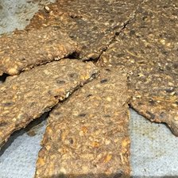

Buckwheat Crêpe Batter
For Breton savoury crêpes (galettes).
For Breton savoury crêpes (galettes).
How to get it right every time.
Hard to eat only one.

A budget-friendly classic.
Julia’s version.
Squeeze 0.5L of lemon juice.
Beat 75g of sugar with 2 whole eggs and 3 egg yolks.
A winter classic that always pleases.
From Mamie Lucette.